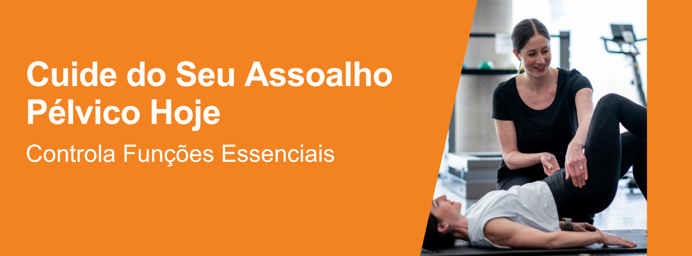
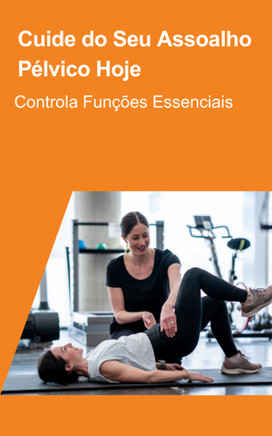
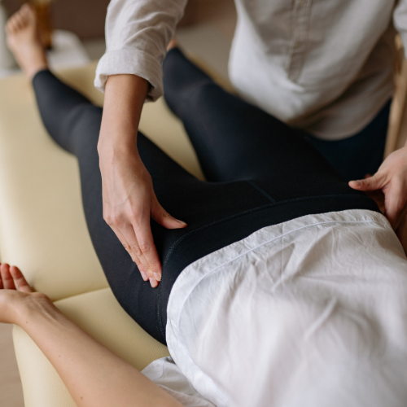
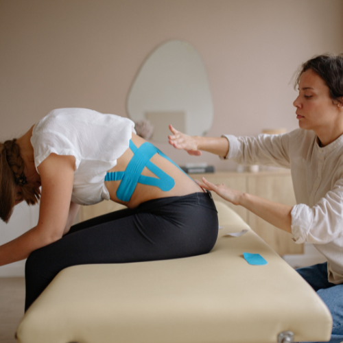
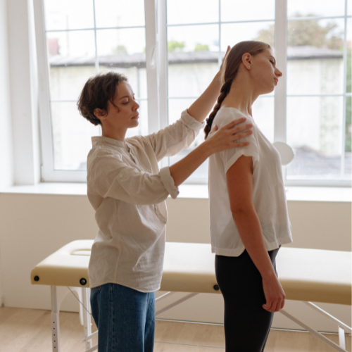

Cuide do Seu Assoalho Pélvico Hoje
O assoalho pélvico sustenta órgãos vitais e controla
funções essenciais. Nossa avaliação especializada
identifica fraquezas, corrige disfunções e previne
complicações, devolvendo conforto, autonomia e
segurança para suas atividades diárias com métodos
atualizados, humanos e cientificamente comprovados.


Tratamentos Especializados para
Incontinência e Dor
Incontinência urinária e dor pélvica crônica afetam milhões,
mas têm solução. Utilizamos biofeedback, exercícios dirigidos
e terapias manuais para fortalecer a região, reduzir sintomas
incômodos e restaurar o equilíbrio muscular, proporcionando
alívio duradouro e melhor qualidade de vida.
Reconquiste Confiança e Qualidade de Vida
Disfunções íntimas podem limitar relacionamentos e atividades físicas.
Com abordagem multidisciplinar e acolhedora, tratamos pós-operatórios,
gestação, menopausa e saúde sexual masculina e feminina, devolvendo
autoestima e permitindo que você viva plenamente, sem vergonha ou
restrições desnecessárias e com total sigilo profissional.
